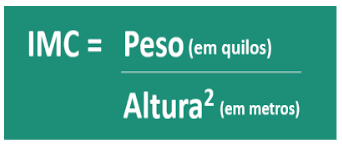

O que é IMC?
IMC significa Índice de Massa Corporal e é um parâmetro utilizado para saber se o peso está de acordo com a altura, o que pode interferir diretamente na saúde e qualidade de vida da pessoa. Assim, a partir do resultado do IMC é possível saber também se a pessoa está dentro do peso ideal e também identificar sobrepeso, obesidade ou desnutrição em crianças, adolescentes, adultos ou idosos. Dessa forma, com o cálculo do IMC, é possível fazer algumas mudanças na rotina diária, como mudar a dieta, melhorar os hábitos alimentares e praticar atividade física de forma regular, por exemplo.
Como é calculado?
O IMC é a relação entre peso e altura e o cálculo é feito de acordo com a fórmula:
O peso deve estar em kg e a altura em metros, e o resultado é dado em kg/m2. Depois de obter o resultado, é possível verificar em que faixa o IMC se encontra, podendo indicar:
- Magreza, quando o resultado é menor que 18,5 kg/m2;
- Normal, quando o resultado está entre 18,5 e 24,9 kg/m2;
- Sobrepeso, quando o resultado está entre 24,9 e 30 kg/m2;
- Obesidade, quando o resultado é maior que 30 kg/m2.
Assim, de acordo com o resultado do IMC é possível também saber se existe algum risco de desenvolver doenças. Isto porque quanto maior é o valor do IMC, maior é a quantidade de gordura acumulada no corpo e maior é o risco da pessoa ter doenças como pressão alta, diabetes e doenças cardíacas.